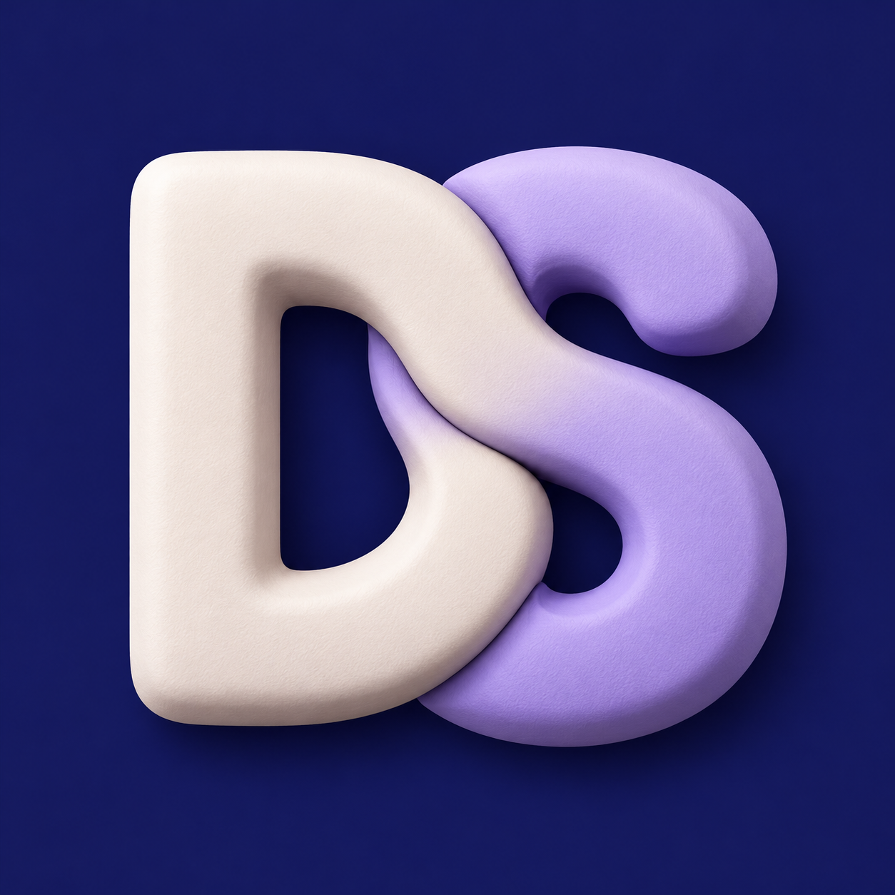
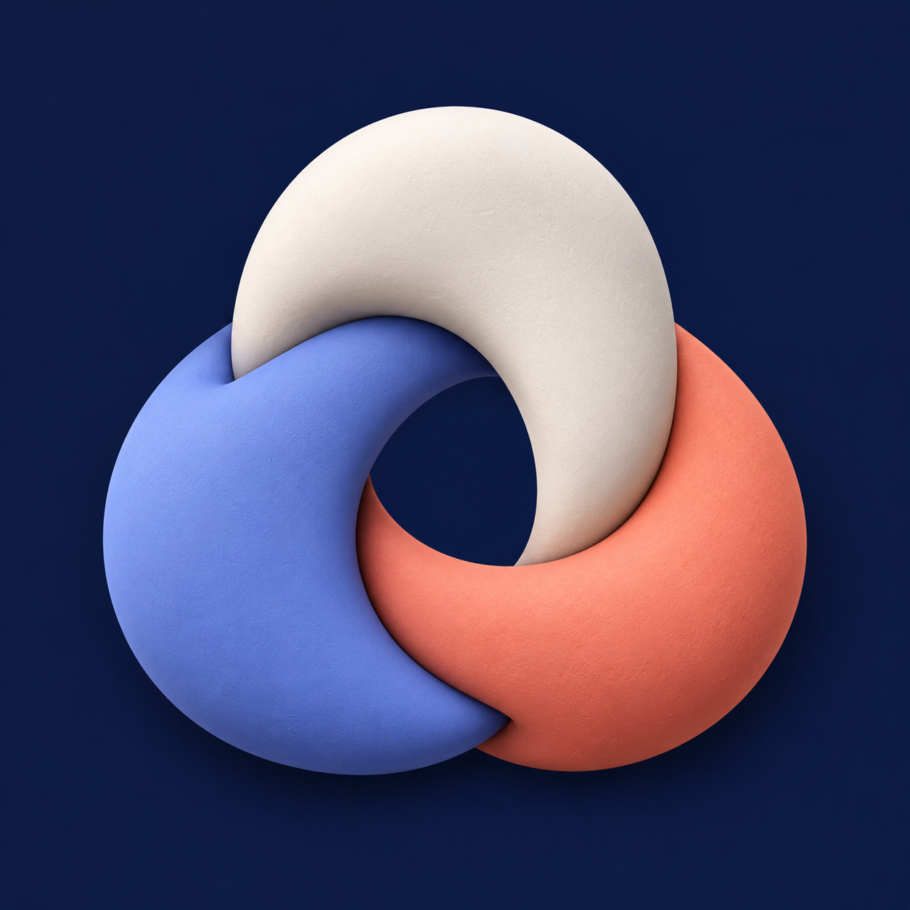
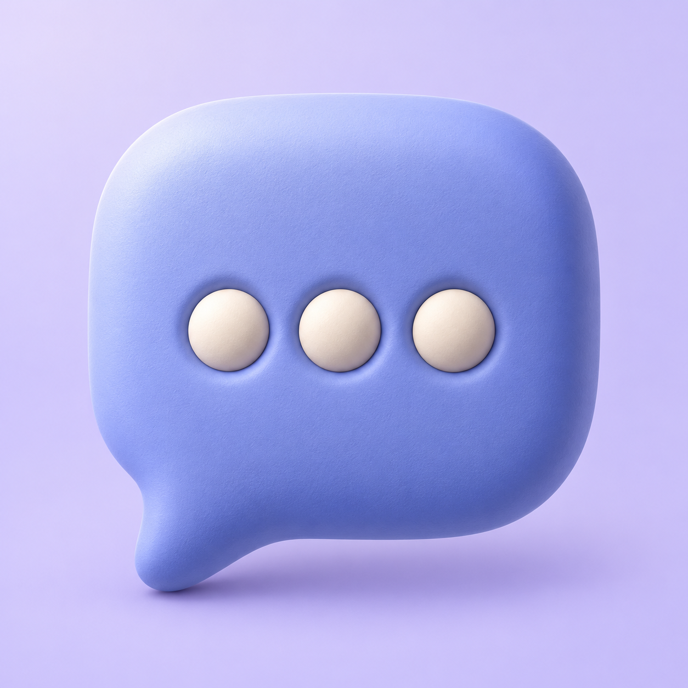

DS · Interlock
Porcelain and lavender on indigo. Soft joined letterforms.
Two DS monograms, a connected hub, and a chat icon. Compare at everyday app sizes.

Porcelain and lavender on indigo. Soft joined letterforms.
Teal and terracotta on ivory. A sharper joined monogram.

Three sculpted links for chat, projects, and work.

A soft lavender bubble with inset porcelain dots.